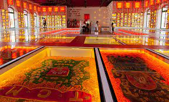
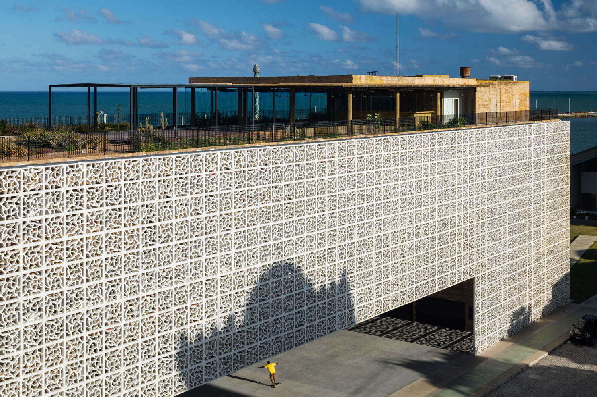

Paço do Frevo
O Paço do Frevo é um espaço cultural dedicado à difusão, pesquisa, lazer e formação no campo da dança e música do frevo. Localizado no Recife Antigo, o Paço oferece exposições permanentes e temporárias, além de apresentações ao vivo e oficinas para os visitantes.
Cais do Sertão
O Cais do Sertão é um museu interativo que retrata a cultura, história e geografia do sertão nordestino. Localizado às margens do Rio Capibaribe, o museu oferece uma experiência imersiva através de exposições, instalações interativas e apresentações culturais.
